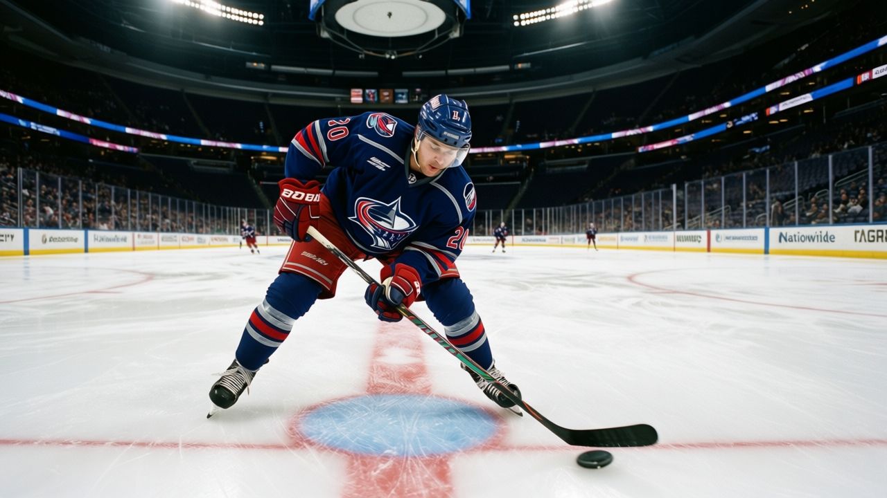

Morning Skate Notes: Columbus changes 15 spots, Wright up to the second line
The Blue Jackets rebuilt the bottom six and three blue-line pairings in a 48-hour stretch. Pirjeta was scratched, then landed on the shelf.
 Ray CallumSenior correspondent · Home Ice Network
Ray CallumSenior correspondent · Home Ice Network
 Columbus Blue Jackets made 15 lineup changes between a 4-3 overtime win over
Columbus Blue Jackets made 15 lineup changes between a 4-3 overtime win over  Calgary Flames on Saturday and a 5-3 loss at
Calgary Flames on Saturday and a 5-3 loss at  Chicago Blackhawks on Monday. Tyler Wright76 moved from fourth line center to the second line, the biggest single promotion in the reshuffle.
Chicago Blackhawks on Monday. Tyler Wright76 moved from fourth line center to the second line, the biggest single promotion in the reshuffle.
 Lasse Pirjeta73 was scratched for Monday's game. Two days later the league designated his wrist injury, onset between Dec 20 and Dec 22, return date Jan 10.
Lasse Pirjeta73 was scratched for Monday's game. Two days later the league designated his wrist injury, onset between Dec 20 and Dec 22, return date Jan 10.  Sean Pronger66 slid into the fourth line center role Pirjeta had occupied before the scratch.
Sean Pronger66 slid into the fourth line center role Pirjeta had occupied before the scratch.
 Henrik Tallinder76 went from six pair assignments to a single spot on the third pair's left side, the deepest role cut of any player in the reshuffle.
Henrik Tallinder76 went from six pair assignments to a single spot on the third pair's left side, the deepest role cut of any player in the reshuffle.  Darrel Scoville70 was dropped.
Darrel Scoville70 was dropped.  Rob Ray64 returned on the third line right wing.
Rob Ray64 returned on the third line right wing.  Jean-Luc Grand-Pierre77 came back after a concussion logged earlier this season.
Jean-Luc Grand-Pierre77 came back after a concussion logged earlier this season.
Forwards shuffled below the top line
 Adam Mair67 moved from fourth line center to fourth line right wing. Kent McDonell68 switched from right to left wing on the third line.
Adam Mair67 moved from fourth line center to fourth line right wing. Kent McDonell68 switched from right to left wing on the third line.  Jim Montgomery67 took the right wing side of the fourth line.
Jim Montgomery67 took the right wing side of the fourth line.  Andrew Cassels78 lost his extra power-play slot assignment.
Andrew Cassels78 lost his extra power-play slot assignment.
Blue line side swaps and a pair demotion
 Dmitry Yushkevich76 moved from left to right on his pair.
Dmitry Yushkevich76 moved from left to right on his pair.  Dimitri Kalinin80 shifted from left to right across four pair assignments.
Dimitri Kalinin80 shifted from left to right across four pair assignments.  Richard Smehlik74 slid from the second pair to the third.
Richard Smehlik74 slid from the second pair to the third.  Darryl Sydor76 went from left to right on the second pair.
Darryl Sydor76 went from left to right on the second pair.
Five out, the most in the league
Columbus carries the deepest injury list in the league with 5 players out.  Espen Knutsen76 (wrist, return Dec 24),
Espen Knutsen76 (wrist, return Dec 24),  Jaroslav Spacek74 (groin, return Dec 26),
Jaroslav Spacek74 (groin, return Dec 26),  Mike Keane78 (unspecified, return Dec 23), and Pirjeta are named on the current shelf. The reshuffle was forced as much by the infirmary as by the 10-14-1 record and 35 points.
Mike Keane78 (unspecified, return Dec 23), and Pirjeta are named on the current shelf. The reshuffle was forced as much by the infirmary as by the 10-14-1 record and 35 points.
The goaltending split is nearly even:  Marc Denis86 has 16 starts,
Marc Denis86 has 16 starts,  Pascal Leclaire88 has 14. Neither carries more than 50 percent of the 32 games played.
Pascal Leclaire88 has 14. Neither carries more than 50 percent of the 32 games played.
The reshuffle buys 2 games before the next test. Columbus hosts  Detroit Red Wings on Saturday and
Detroit Red Wings on Saturday and  San Jose Sharks on Monday. Detroit is 15-10-4 on a 5-game win streak. San Jose is 12-15-3 and sits 2 points ahead of Columbus Blue Jackets in the standings.
San Jose Sharks on Monday. Detroit is 15-10-4 on a 5-game win streak. San Jose is 12-15-3 and sits 2 points ahead of Columbus Blue Jackets in the standings.